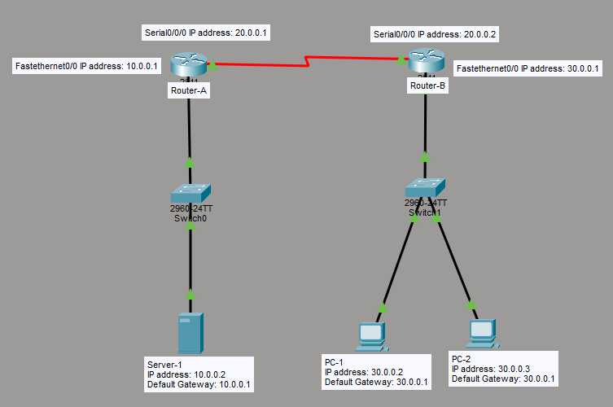

What I Learned
I configured Extended ACLs across two routers to block specific traffic between a server and two PCs. This was my first hands-on experience with actual traffic filtering — not just reading about it.
The biggest realization: ACLs process rules top to bottom and stop at the first match. The order of your statements matters more than I initially thought.
What is an ACL?
An ACL (Access Control List) is a basic firewall built into Cisco IOS. It filters packets at Layer 3 and Layer 4 based on rules you define.
ACL Types
| Type | Range | Filters |
|---|---|---|
| Standard | 1-99, 1300-1999 | Source IP only |
| Extended | 100-199, 2000-2699 | Source, destination, protocol, port |
| Named | Any name | Same as extended + editable lines |
In this lab I used only Extended ACLs (numbered 150, 160, 170) because I needed to filter by specific protocol and port.
Wildcard Masks
Wildcard masks tell the router which bits of an IP to check. 0 = check this bit, 1 = ignore this bit.
host 10.0.0.2= exact match (same as 0.0.0.0)30.0.0.0 0.255.255.255= match any IP in 30.x.x.x
My Lab Topology
Server-1 → Switch-A → Router-A ↔ Router-B → Switch-B → PC-1 and PC-2

Download my Packet Tracer lab:
Download Lab File| Device | Interface | IP Address | Gateway |
|---|---|---|---|
| Server-1 | — | 10.0.0.2 | 10.0.0.1 |
| Router-A | Fa0/0 | 10.0.0.1 /8 | — |
| Router-A | S0/0/0 | 20.0.0.1 /8 | — |
| Router-B | S0/0/0 | 20.0.0.2 /8 | — |
| Router-B | Fa0/0 | 30.0.0.1 /8 | — |
| PC-1 | — | 30.0.0.2 | 30.0.0.1 |
| PC-2 | — | 30.0.0.3 | 30.0.0.1 |
- Block PC-1 from accessing HTTP on Server-1
- Block Server-1 from pinging the PC network
- Allow all other traffic
Configuration Commands
Router A
I applied ACL 150 inbound on the serial interface to catch traffic arriving from Router B.
enable
config t
interface fastethernet0/0
ip address 10.0.0.1 255.0.0.0
no shutdown
interface serial0/0/0
ip address 20.0.0.1 255.0.0.0
no shutdown
exit
! Block PC-1 (30.0.0.2) from HTTP to Server-1 (10.0.0.2)
access-list 150 deny tcp host 30.0.0.2 host 10.0.0.2 eq www
access-list 150 permit tcp 30.0.0.0 0.255.255.255 10.0.0.0 0.255.255.255
! Block PC-2 (30.0.0.3) from FTP to Server-1 (configured, not applied)
access-list 160 deny tcp host 30.0.0.3 host 10.0.0.2 eq ftp
access-list 160 permit tcp 30.0.0.0 0.255.255.255 10.0.0.0 0.255.255.255
! Apply ACL 150 on serial interface — inbound traffic from Router B
interface serial0/0/0
ip access-group 150 inRouter B
ACL 170 blocks Server-1 from pinging the PC network, applied inbound on the serial interface.
enable
config t
interface fastethernet0/0
ip address 30.0.0.1 255.0.0.0
no shutdown
interface serial0/0/0
ip address 20.0.0.2 255.0.0.0
no shutdown
exit
! Block Server-1 (10.0.0.2) from pinging 30.0.0.0 network
access-list 170 deny icmp host 10.0.0.2 30.0.0.0 0.255.255.255 echo
access-list 170 permit ip any any
! Apply ACL 170 on serial interface — inbound traffic from Router A
interface serial0/0/0
ip access-group 170 inVerification
show access-lists
show ip interface serial0/0/0- PC-1 → HTTP to Server-1: Blocked ✓
- PC-2 → FTP to Server-1: Allowed (ACL 160 not applied)
- Server-1 → Ping PC-1: Blocked ✓
- PC-1 → Ping Server-1: Allowed ✓
Key Takeaways
What I Understood
- Extended ACLs filter by source IP, destination IP, protocol, and port
- ACL rules are matched top to bottom — first match wins
- Always add a permit statement — implicit deny blocks everything else
- Configuring an ACL does nothing until it's applied to an interface
- Apply extended ACLs close to the source of traffic